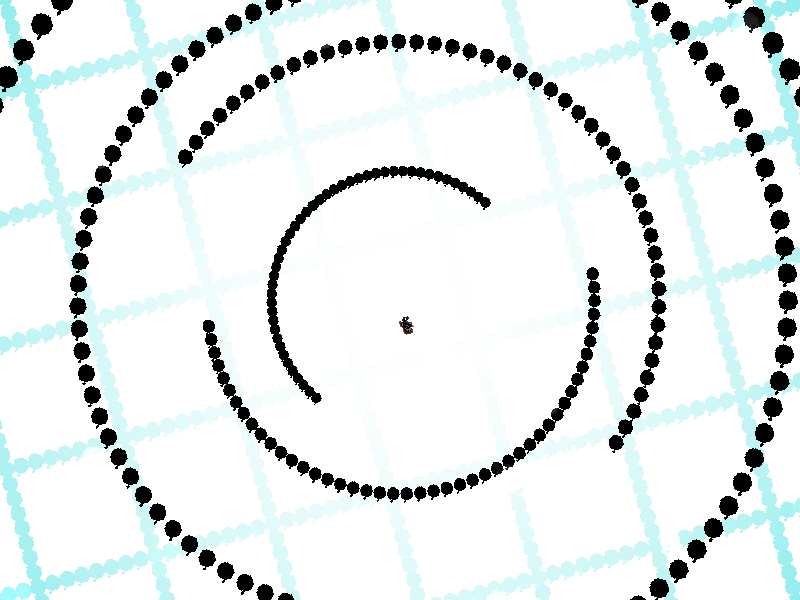
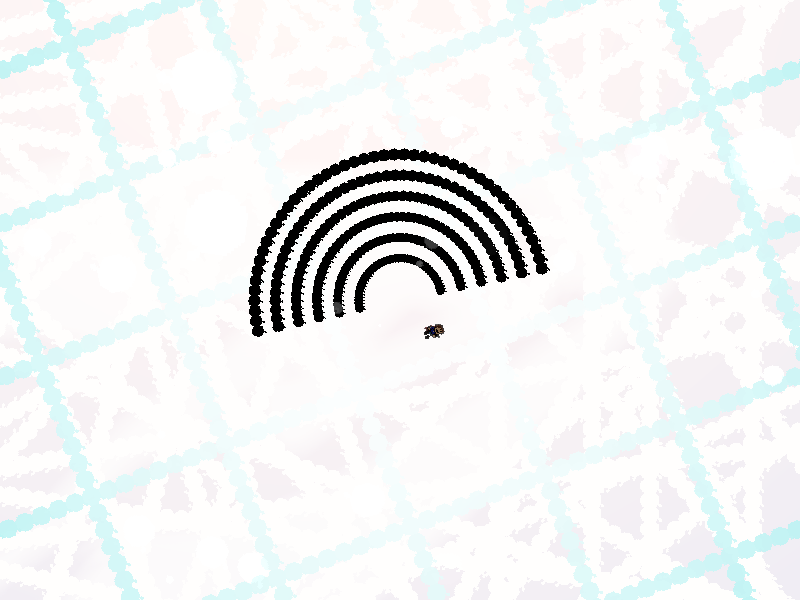

| creator | segment | label | jump |
|---|---|---|---|
| NN | 2:36.50~2:37.90 | R*A*S/Q | infinite |
11-5~11-6の解答に対応する、択一型の弾幕です。
白色状態と黒色状態の間を高速で遷移する半円状弾幕について、収束する際の状態を11-6の時点で見極め、そのときの角度を予測することを目的としています。
2:34.60~2:36.50において存在する〇型弾幕と✕型弾幕の背景演出に関して、これらは2:36.50~2:37.50において状態の遷移を繰り返す半円状弾幕が最終的に収束する際の状態を示しています（fig.11-7.1.a~fig.11.7.2.b）。
具体的には、11-6において正解の列に存在する〇型弾幕および不正解の列に存在する✕型弾幕を構成する弾の色が黒の場合、半円状弾幕については黒色の状態で収束し（fig.11-7.1.a, fig.11-7.1.b）、11-6において正解の列に存在する〇型弾幕および不正解の列に存在する✕型弾幕を構成する弾の色が白の場合、半円状弾幕については白色の状態で収束します（fig.11-7.1.a, fig.11-7.1.b）。

なお、半円状弾幕の2:36.50における初期状態、および状態が遷移する回数はランダムであり（遷移が発生する期間は固定）、それぞれの状態における形状については互いに180°異なる角度を基準としています。
また、黒色状態においては8-6同様格子状弾幕が存在していることに注意が必要です（当たり判定は2:37.50の時点でなくなる）。